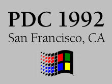
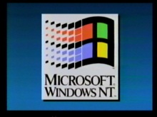

PDC 1992 was better known as the Win32 Professional Developers Conference and took place at the Moscone Center in San Francisco, California in July. Attendees saw the first demonstration of the Win32…
PDC 1992 Keynote with Bill Gates[WMV] [0:57:23] [2011/05/21]PDC 1992 was better known as Win32 Professional Developers Conference and took place at the Moscone Center in San Francisco, California. In this video, Bill Gates delivers the keynote and talks about…